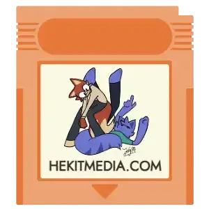
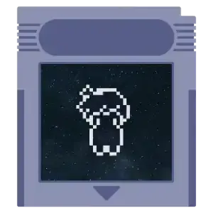
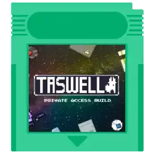
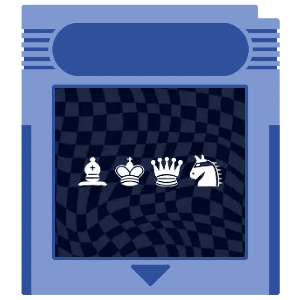

Website - Hekit Software
Solo Developer, Artist
The official website for my creative work, built from scratch with vanilla HTML and CSS;
Designed with a clean, retro-inspired aesthetic that showcases my personal style >:D
This site is an ongoing, personal web-design project that I will continue to refine and update over time.

Multi-Media Project - Hekit
Composer, Artist
Excursion: Day and Night is a multi-media project combining original music and visual art;
Composed as a soundtrack for an imagined game, drawing inspiration from the weird and atmospheric style of the original
1995 SNES EarthBound (a.k.a. Mother 3) soundtrack.
Planned for release as a vinyl LP with an accompanying art booklet.
Video-Game - Hekit Software
Solo Developer, Artist, Soundtrack Composer
"Hold This For Me" is a first-person, puzzle/story game inspired by the likes of In Sound Mind,
LSD Dream Emulator, and ENA Dream BBQ.
The first chapter is currently in very slow development due to busy-ness with other projects,
in collaboration with Computer Bit Productions for 3D modeling and texturing.
You can find it's itch.io page here if you want to save/follow it.
Fangame/Source Mod - Computer Bit Productions
Primary Soundtrack Composer, Voice-Actor (GLaDOS & Male Announcer)
Portal 2: The Multi Core Hub Era is the working-title for a fangame of the Portal series (VALVe Software)
created by Computer Bit Productions, set after the events of the original Portal (2007).
It is currently in active development.
You can find it here on ModDB,
and here on YouTube for devlog updates.

Video-Game Demo - Hekit Software
Solo Developer, Artist, Soundtrack Composer
This was a small game-demo created over the course of 7-Days for the Yoobee College US187141 Assignment (2025).
It is no longer currently avaliable, but it's itch.io page still exists on the
Hekit Software page.
Video-Game Demo - Hekit Software
Solo Developer, Soundtrack Composer
ELAPSE was a small proof-of-concept for testing the Unity

Video-Game - The Mathmagician
Soundtrack Composer, SFX Artist
dododoododod
 About
Catalogue
Projects
Gallery
Updates
About
Catalogue
Projects
Gallery
Updates